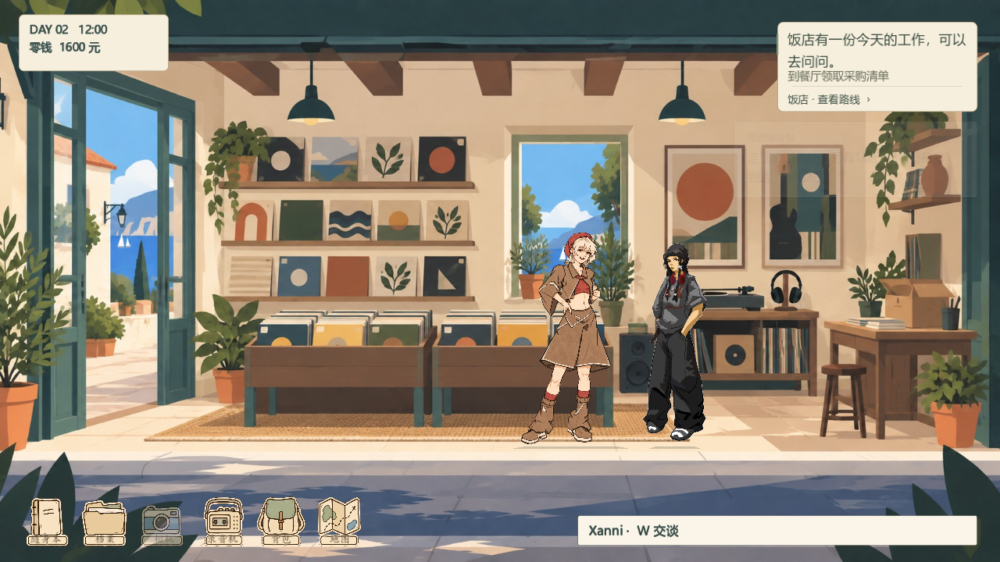
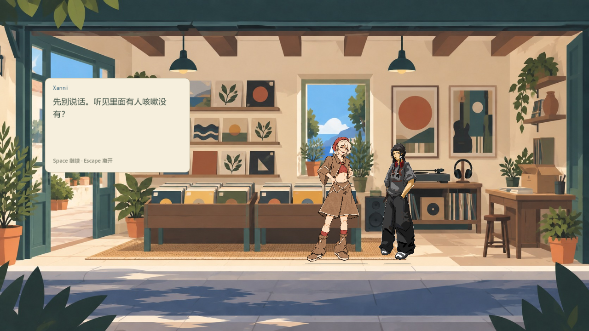
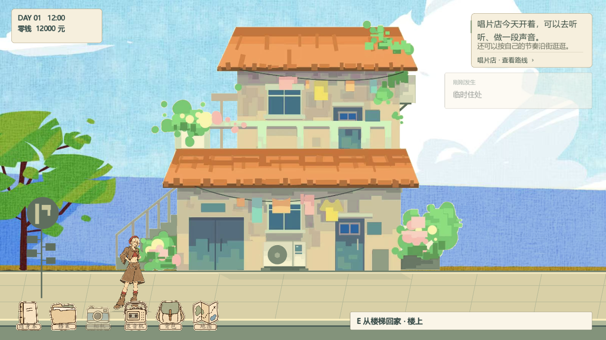
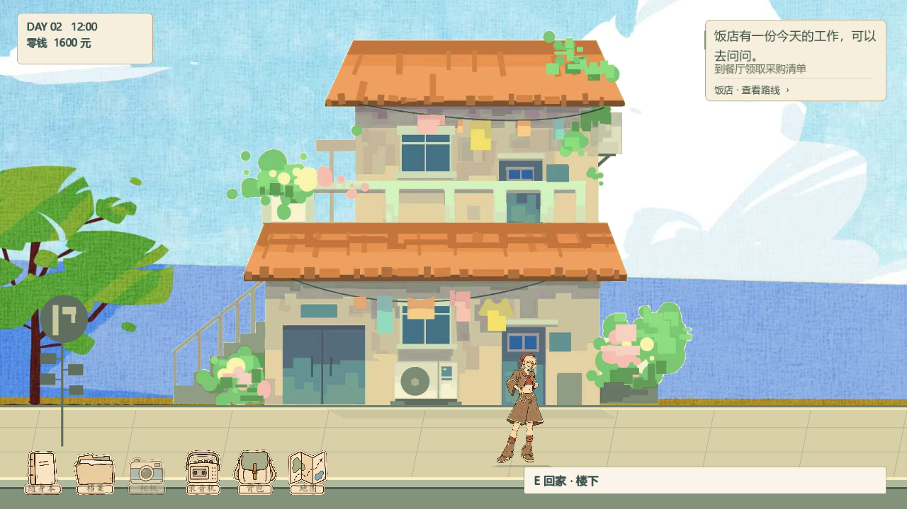
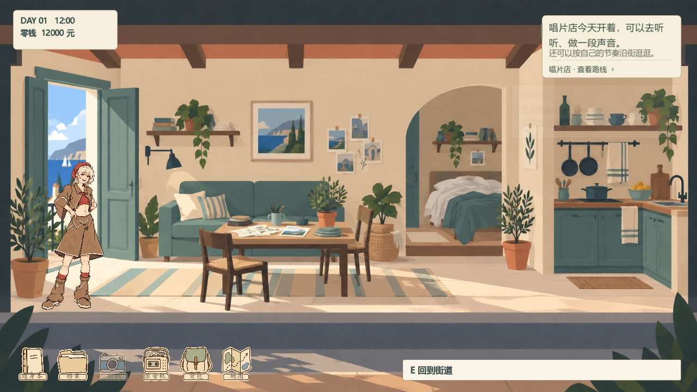
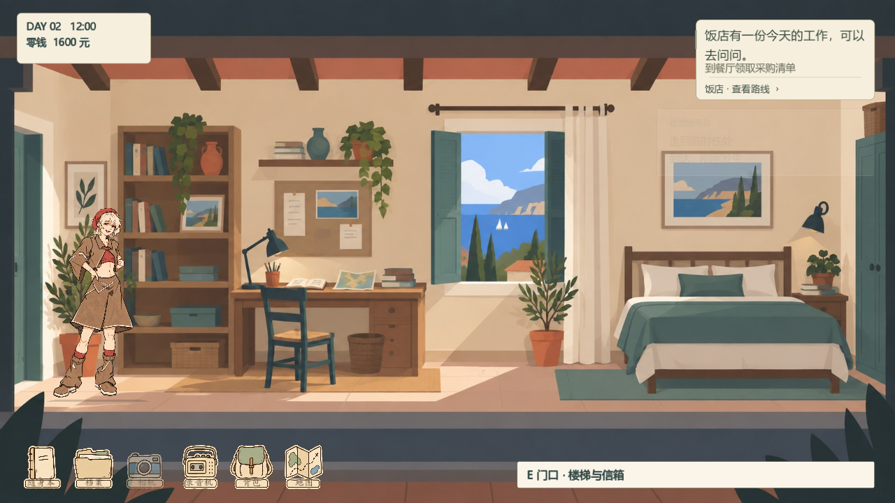

两张用户提供的原画已接入可玩游戏。原始图片不改画，显示时去除纸底并对齐脚下和入口。
素材与交互检查 31 项、房间回归 47 项；导出 Windows PCK 再检查 31 项，均通过。

使用新提供的立绘，保留原来的姓名、对白、工作位置与营业安排。

W 开始交谈，Space 显示文字与继续，Esc 收起。

同一栋建筑。A 从左侧外楼梯回到楼上，建筑底部对齐街道地面。

B 使用右侧门口，门前出现对应提示。栏杆空隙透出背景。

保留已有室内场景与房间功能。
